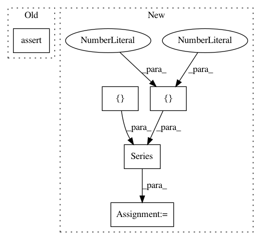

906777bbafc18892a927dfdc5ac3f3b8d40de1b5,featuretools/tests/dfs_tests/test_dfs_method.py,,test_approximate_features,#Any#Any#,76
Before Change
relationships=relationships,
target_entity="transactions",
cutoff_time=cutoff_times_df)
assert len(features) == len(features_2)
assert (feature_matrix.columns == feature_matrix_2.columns).all()
assert ((feature_matrix[column] == feature_matrix_2[column]).all()
for column in feature_matrix.columns)
After Change
direct_agg_feat_name = "cards.PERCENT_TRUE(transactions.fraud)"
assert len(feature_matrix.index) == 6
assert len(feature_matrix.columns) == len(features)
truth_index = pd.MultiIndex.from_arrays([[1, 3, 1, 5, 3, 6],
[11, 16, 16, 26, 17, 22]],
names=("id", "time"))
truth_values = pd.Series(data=[1.0, 0.5, 0.5, 1.0, 0.5, 1.0],
index=truth_index)
truth_values.sort_index(level="time", kind="mergesort", inplace=True)
assert (feature_matrix[direct_agg_feat_name] == truth_values).all()
In pattern: SUPERPATTERN
Frequency: 3
Non-data size: 5
Instances
Project Name: Featuretools/featuretools
Commit Name: 906777bbafc18892a927dfdc5ac3f3b8d40de1b5
Time: 2018-04-05
Author: roy.wedge@gmail.com
File Name: featuretools/tests/dfs_tests/test_dfs_method.py
Class Name:
Method Name: test_approximate_features
Project Name: biocore/scikit-bio
Commit Name: fafe8422549c1809ad66f124e842431009bbddba
Time: 2015-05-14
Author: yoshiki89@gmail.com
File Name: skbio/stats/ordination/tests/test_ordination.py
Class Name: TestCAResults
Method Name: test_scaling1
Project Name: biocore/scikit-bio
Commit Name: fafe8422549c1809ad66f124e842431009bbddba
Time: 2015-05-14
Author: yoshiki89@gmail.com
File Name: skbio/stats/ordination/tests/test_ordination.py
Class Name: TestCAResults
Method Name: test_scaling2